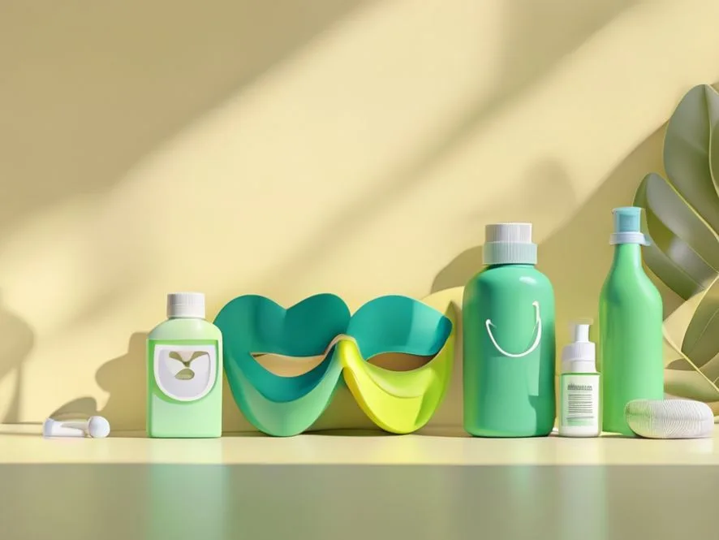
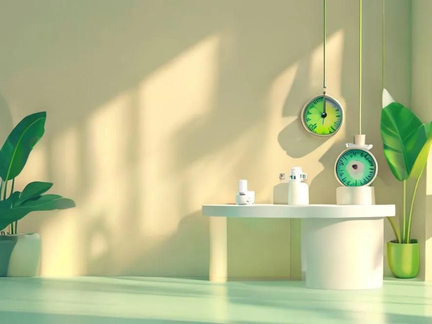
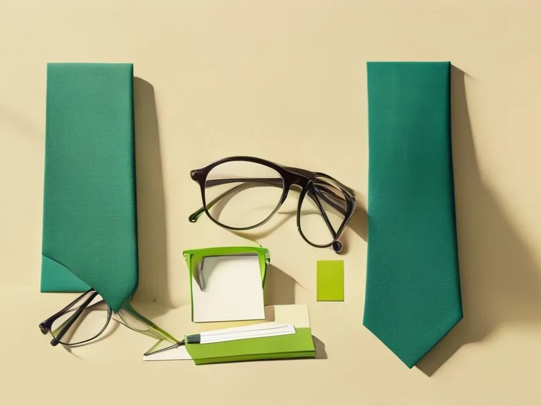
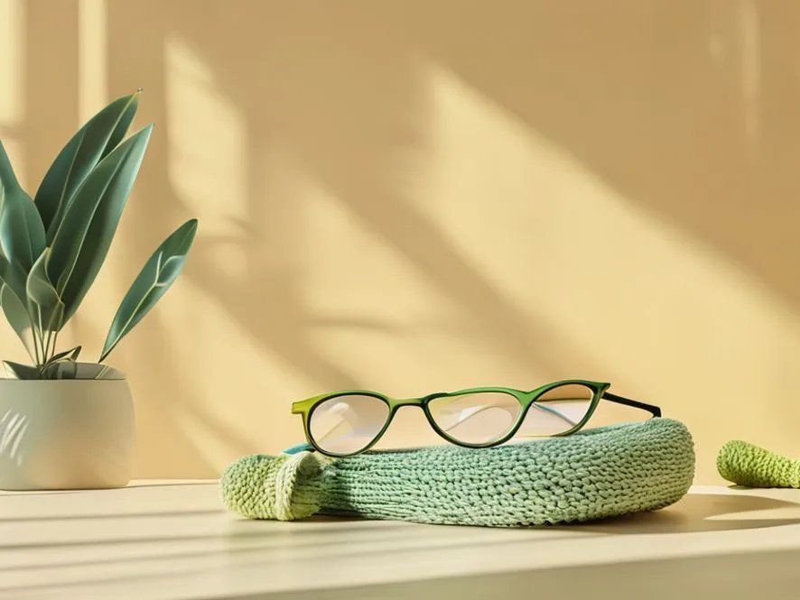
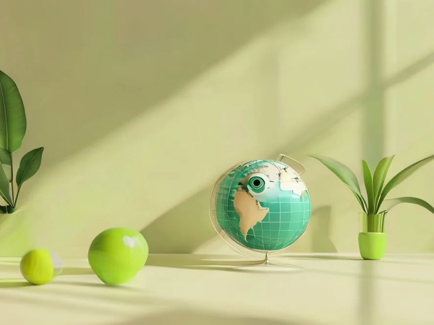
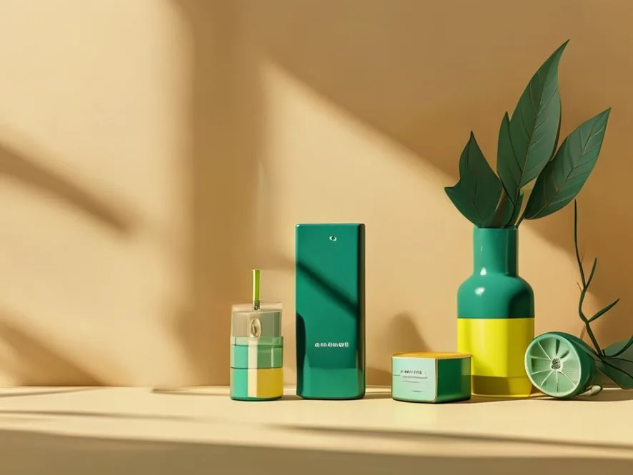
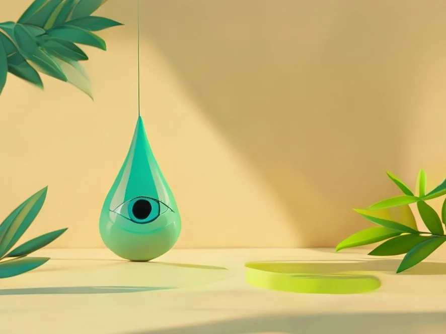
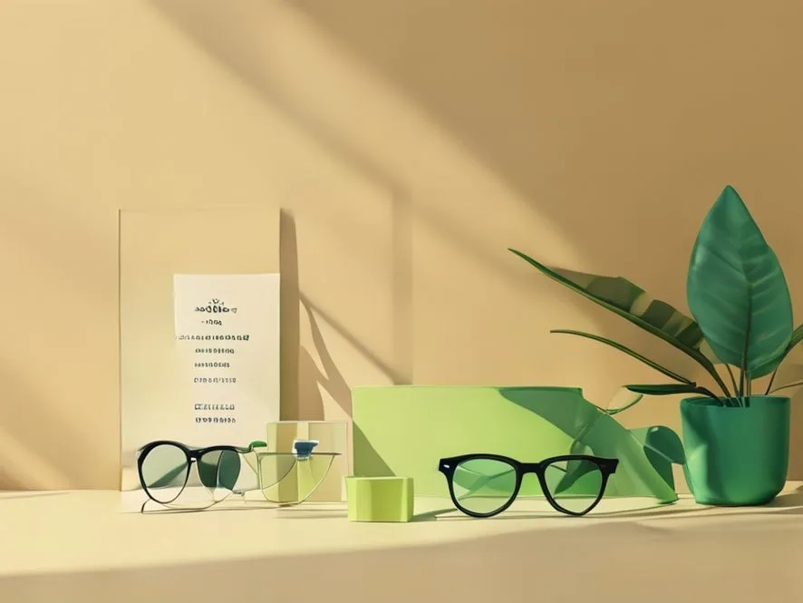
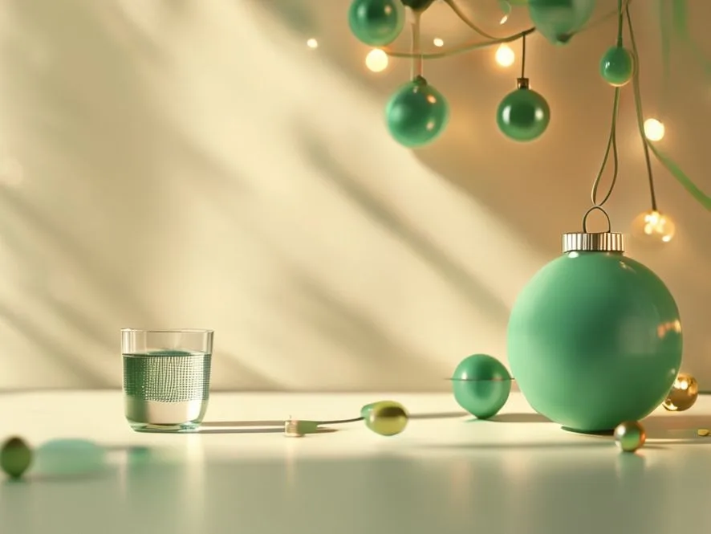

Blog Todo Óptica
Calendario editorial 2026
24 artículos largos (SEO) alineados con fechas clave: educación, pantallas, glaucoma, lectura, verano, sostenibilidad, visión infantil y más.

Entradas
Guías 2026 (optimizadas para SEO)
Servicios destacados: Progresivos, Miopía infantil, Lentillas y Audiología.

La visión en la educación: por qué cuidar los ojos mejora el aprendizaje
Cómo influye la salud visual en el rendimiento escolar y qué señales vigilar en niños y jóvenes.

Amor a primera vista: regalos de San Valentín para cuidar la visión
Ideas útiles y con estilo para regalar visión: gafas de sol, monturas y revisiones en pareja.

Disfraces y lentillas: cómo usar lentes de fantasía de forma segura en Carnaval
Guía clara para evitar infecciones y molestias al usar lentillas de colores o efectos con tu disfraz.
Mujeres con visión: salud ocular femenina en el Día de la Mujer
Cambios visuales en embarazo y menopausia, ojo seco y claves para cuidar la vista en cada etapa.

Día Mundial del Glaucoma: ver el peligro invisible a tiempo
Qué es el glaucoma, por qué puede avanzar sin síntomas y cómo las revisiones ayudan a detectarlo pronto.

Ojos de papá: cuidando la visión de los hombres en el Día del Padre
Consejos de protección en trabajo y deporte, señales de presbicia y regalos útiles para el día a día.

Día Mundial de la Salud: la importancia de la salud visual en tu bienestar
Cómo la vista se relaciona con hábitos, ergonomía y salud general, y cuándo conviene revisarse.
Miradas que leen: cuidando tus ojos en el Día del Libro
Iluminación, postura y descansos para leer más sin fatiga visual (papel, ebook y pantallas).

Los ojos de mamá: regalos y cuidados visuales en el Día de la Madre
Ideas de regalo con sentido (sol, progresivos, estuches) y claves de cuidado visual para mujeres adultas.

Pantallas e iluminación: protege tu vista en el Día de Internet
Fatiga visual digital, regla 20-20-20, ergonomía y lentes para ordenador: guía práctica.

Eco-óptica: gafas sostenibles en el Día Mundial del Medio Ambiente
Materiales responsables, reciclaje de monturas y cómo elegir gafas con impacto menor sin renunciar a calidad.

Día de las Gafas de Sol: veraniega tu mirada con protección UV
Cómo elegir gafas de sol con UV real, qué es la polarización y consejos para niños y conductores.

Sol, cloro y pantallas: cuida tus ojos durante las vacaciones
Guía de verano: UV, piscina, sequedad por aire acondicionado y descanso visual para toda la familia.

La vista de los abuelos: celebrando el Día de los Abuelos con salud visual
Afecciones frecuentes en mayores, cómo detectarlas a tiempo y soluciones cómodas para el día a día.

Tecnología a la vista: descubre las lentes Varilux XR de última generación
Qué aporta una lente progresiva premium y cómo elegir el mejor diseño según tu rutina y necesidades.

Vuelta al cole con buena vista: checklist visual para el nuevo curso
Señales de problemas visuales en clase, hábitos con pantallas y cuándo hacer una revisión infantil.

Día del Daltonismo: viendo el mundo en otros colores
Qué es el daltonismo, cómo detectarlo, mitos comunes y claves de accesibilidad en el día a día.

Día Mundial de la Visión: ama tus ojos y cuida tu vista
Hábitos diarios, protección solar y revisiones para prevenir problemas visuales y ganar calidad de vida.

Ojo vago, ojo al dato: Día Mundial de la Ambliopía
Señales en la infancia, detección temprana y por qué el tratamiento a tiempo cambia el pronóstico.

Halloween sin sustos oculares: maquillaje FX y lentillas con seguridad
Consejos para desmaquillarte bien, evitar irritaciones y usar lentillas cosméticas sin riesgos.

Diabetes y visión: la retinopatía diabética y por qué revisar la retina
Cómo afecta la diabetes a los ojos, síntomas de alerta y por qué las revisiones periódicas importan.

Black Friday en tu óptica: cómo aprovechar ofertas sin perder de vista la calidad
Guía para comparar promociones en gafas graduadas y de sol: garantía, asesoramiento y elección inteligente.

Guía de regalos navideños: detalles para ver y lucir mejor
Ideas de regalo de óptica para techies, deportistas y amantes de la moda: útil, bonito y con protección.

Ojos sanos en las fiestas: consejos visuales para Navidad y fin de año
Pantallas, luces, frío y sequedad ocular: trucos prácticos para cuidar la vista en vacaciones.